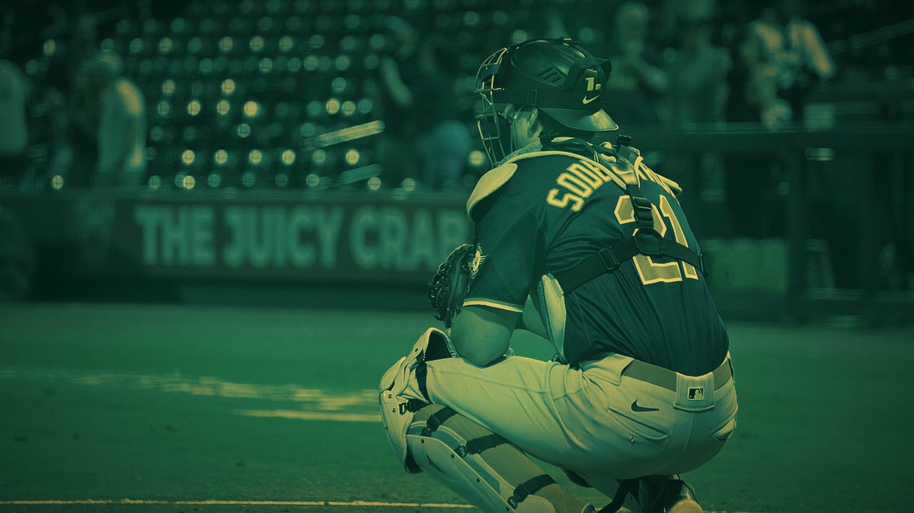
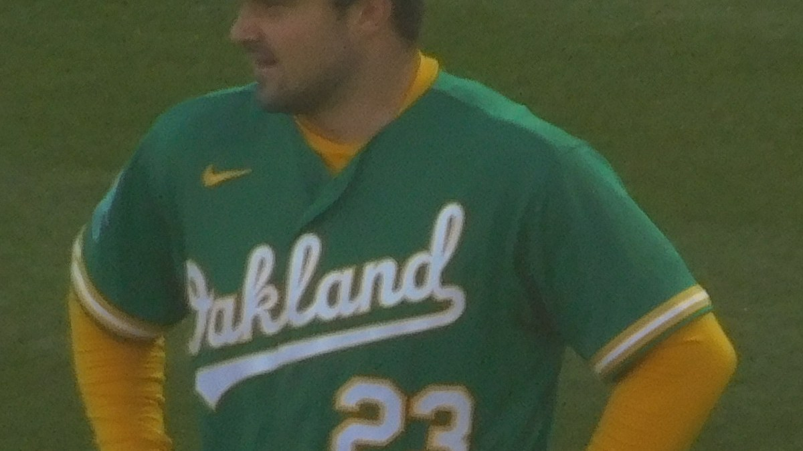
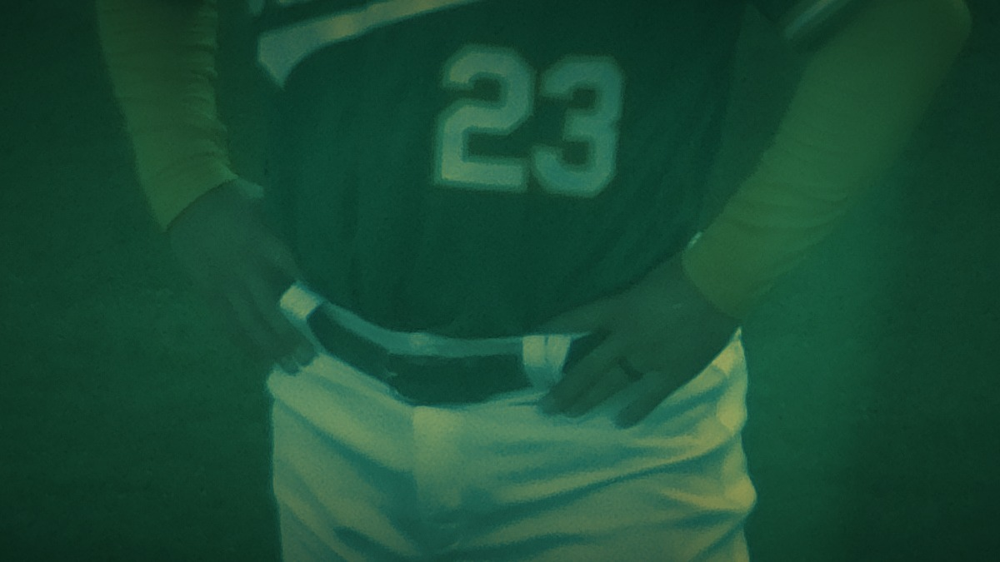

Latest in A's

The A's Stole One Back in the Ninth and Then Walked It Away in the Tenth
Jacob Wilson tied it with two outs in the ninth, Jonah Heim put them ahead in the tenth, and Luis Medina walked two with nobody out. Diamondbacks 6, A's 5.
The A's Out-Hit the Nationals and Lost 5-2, Because of Course They Did
One day after hanging 15 on Washington, the A's out-hit the Nationals 11-7, scored twice, and lost the series at home as Abrams and Crews went back-to-back in the fifth.

The A's Just Beat Somebody 15-1, and I Checked the Box Score Three Times to Be Sure
One night after the 23-4 humiliation, JT Ginn took a no-hitter into the seventh, Wilson, Soderstrom and Cortes homered, and the 10-game losing streak is dead.

Shea Langeliers Started the All-Star Game and Reached Base Twice in a 4-0 AL Win
The A's catcher caught the first pitch of the Midsummer Classic, walked, scored on Bellinger's two-run single, and later singled to deep right center. One at-bat, one hit, a perfect night, and he ran the American League staff mic'd up on national TV.

Nationals 23, A's 4: Oakland Opens the Second Half With an Embarrassing Blowout
Washington hung 23 runs in West Sacramento, Gage Jump got shelled, and Andres Chaparro homered twice. Soderstrom and Langeliers went deep for the only bright spots in a wipeout.

A's at the All-Star Break: 41-55, a Nine-Game Skid, and the Mirage I Warned You About
First place to fourth, eight games back, losers of nine straight into the break. The full first-half breakdown of the collapse, the Sacramento backdrop, and why the second half only gets uglier.

I Told You the A's Were a Mirage: Nine Straight Losses, 9-1 to the White Sox, and No Bottom in Sight
A 9-1 beating in Chicago drops them to nine in a row, 1-9 in their last ten, a 7.09 ERA and 41-53. This was always coming, and there is no reason to think it stops.

The A's Lost 1-0 Again, Eight Straight Now, and They Are Coming Back to Earth Fast
Four-hit by five White Sox pitchers, a wasted gem from Gage Jump, a stranded leadoff triple in the eighth, and a 41-54 record. The comeback to earth is on.

A's at White Sox, July 10: Six Straight Losses and Jacob Lopez's 7.04 ERA Walk Into Chicago
A 41-52 team on a six-game skid sends a 7.04 ERA to the mound against Sean Burke, as a clear road underdog. A preview of Friday night's mess.

The A's Got Swept, Lost Their Sixth Straight, and Watched a Kid Homer on His First Swing
Framber Valdez retired the first 11, Detroit hit three homers, and a rookie went deep on his first big-league swing. A's lose 4-1, swept out of Comerica.

A Rookie Named Melton Made the A's Look Like a Beer-League Team, 6-1
Nine strikeouts from a kid on his sixth start, six runs off Jeffrey Springs, one run of offense that scored on an error. Detroit rolled.

The A's Play in Sacramento Now, and That's the Whole Ugly Story
A century of Oakland baseball, boxed up in a Triple-A park while everyone waits on Las Vegas. Nobody in the Town asked for this.